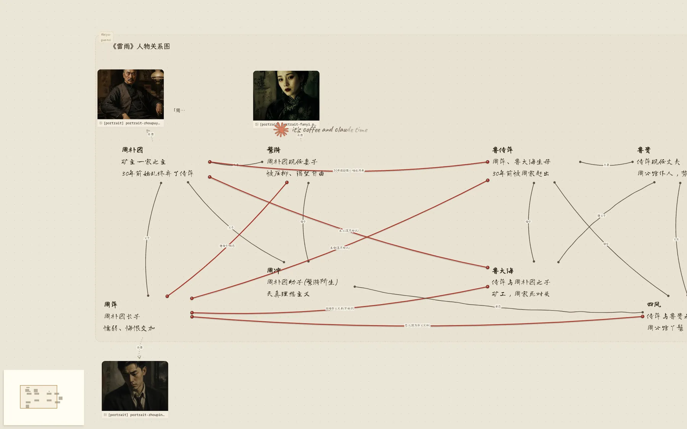

面向创作者的 AGENT 工作台 · 开源
一句话描述需求，agent 完成制作
哪里错了，圈哪里。网页、图、Word 文档在同一块画布上做出来，做完的都是真文件，能下载、能继续改、能发布。
一句话即可开工
圈选直接修改
真文件能下载 · 能发布
自带密钥桌面版 · 不抽成

画布产物、板书、素材夹都是画布上的对象，有自己的位置，能拖能圈能连线。
聊天卡钉在右侧，它调了哪个工具、改了哪个文件、想了什么，逐条记着。
黑板讨论的结论直接写在画布上，不埋在聊天记录里。


看
20 秒，看它做一件事
西藏攻略项目里敲一句「用画布上现有的素材，再做一张单页的路线总览海报」。它先问画幅，答 16:9 之后开始做，草稿夹长出来，自己截图检查，最后海报缩略图进夹。录的是真会话，没剪工具调用。
01
一句话，走完整个流程
大多数工具把「想」和「做」拆开：你描述，它生成，你再回头改。Nodesign 把这两步放进同一块画布。你说一句，它自己排步骤、调工具、生成产物，做完的结果就留在画布上。
不满意的地方不用打字描述。在预览上圈一块，写一句，它按你说的改。改完的版本叠在旧版之上，随时可以回退。
先给我一版能看的，细节后面再调。 用户坐下来说的第一句话，多半是这个意思
对照
同一件事，两条路
左边是现在的做法，右边是它跑完一轮的结果。
| 传统流程 | Nodesign | |
|---|---|---|
| 描述需求 | 写文档、画线框，来回确认 | 说一句 |
| 出第一版 | 排期、等设计稿 | 它当场做出来 |
| 修改 | 标注、截图、再沟通 | 圈一块，写一句 |
| 交付 | 打包、导出、传文件 | 一条命令发布 |
02 · 一次会话的六个位置
从一句话到可交付的产物
它先给出结构，确认后再继续。
①描述需求一句模糊的话，甚至还没想清楚要什么。
②它先给出结构排好再动手，省得来回返工。
③它自己选工具生图、抠图、写页面、跑代码，自己挑。
④产物落到画布上不是下载到文件夹里，而是留在画布上。
⑤圈选后直接改不用描述坐标，指出来就能改。
⑥沉淀成一个项目每一版都保留，随时可以回退。
03
一块画布，多种产物形态
它不是只能做网页的工具。产物形态是画布上的一个属性，你说要什么，它就按那种产物的规范来做。
WEB
网页与站点
落地页、作品集、多页站点。响应式，可直接发布。
- 整站导出
- 移动端单独检查
DOC
文档与演示
真 Word 文件，对方可以打开继续编辑。演示按屏翻页。
- .docx 导出
- 固定画幅页面
IMAGE
图像与视频
生图、抠图、海报、短片。抠出的主体可作版面元素。
- 透明底叠层
- 分镜拼装
PLAY
角色与互动
可交互的角色与原型。状态保留，重新打开还在。
- 角色设定档案
- 可交互原型
04
画布上做出来、发到公网的站
都是站主自己在公开测试期间做的，每一个都在线，点开就是真站。


况
现在做到哪了
一个人做的，公开测试中。数字截至 2026 年 9 月 9 日，从仓库和数据库里直接数出来的，排掉了站主自己。
60件专用工具
1,176次提交 · 自 04-29
2,446个测试用例
139位注册用户
界面目前只有中文。Windows 桌面版在真机上跑过，macOS 还没验证。手机上能看能聊，整理和编辑用电脑。
线上站每人每天有额度上限，当试玩场用。要当工具用，装桌面版填自己的密钥，或者 npx @xiaobuyu/nodesign 本地跑。